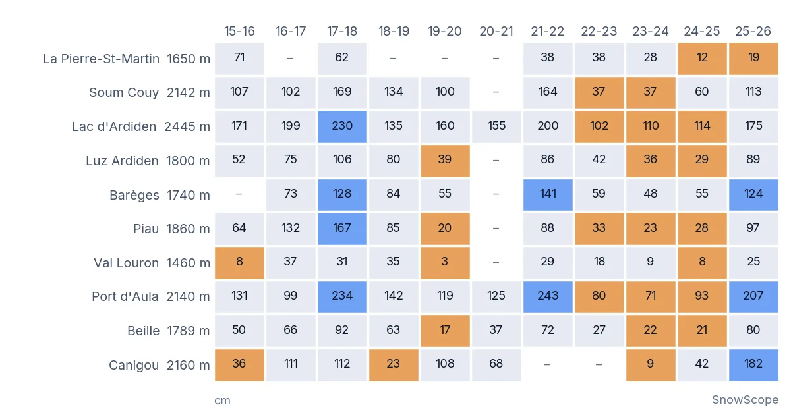

La nieve de los Pirineos vista desde el espacio: 26 inviernos de cobertura y lo que dicen las estaciones sobre los años secos
Empecemos por el primer gráfico. La franja gris es un invierno pirenaico normal visto desde el espacio, la línea marrón es 2023-24, la línea azul 2025-26 y los puntos negros son este otoño. El invierno pasado el suelo por encima de 1.500 m siguió blanco unos 164 días entre noviembre y abril, la tercera temporada más larga en 26 inviernos. Llegó justo después de tres inviernos flojos seguidos, una racha que los registros de las estaciones no habían visto desde 1990-91.
Consulta la previsión de nieve en tiempo real de Piau-Engaly en la app SnowScopeEspesor de nieve, alertas de nieve polvo y mapa 3D, gratis.
Lo que cuenta el satélite
El satélite mira toda la cordillera en cuadrados de 500 m y guarda, cada 8 días, la respuesta a una sola pregunta: ¿estuvo blanco este cuadrado al menos una vez? Nos quedamos con los cuadrados por encima de 1.500 m entre las colinas vascas y el Mediterráneo, una superficie de 9.913 km², y contamos cuántos días estuvo blanco cada cuadrado del 1 de noviembre al 30 de abril. La mejor puntuación posible es de 184 días.
Las nubes son el enemigo. Cuando un cuadrado queda oculto los 8 días, mantenemos su última respuesta despejada. Para el gráfico descartamos cualquier vista de 8 días en la que menos del 80 % de la zona estuviera despejada. Por eso algunas líneas dan saltos: una semana nublada es un punto que falta, no un deshielo.
Veintiséis inviernos, una cifra cada uno
En los 20 inviernos de 2000-01 a 2019-20, el valor central es de 151 días blancos. Uno de cada cinco inviernos quedó por debajo de 142 días, y esa es nuestra línea para un invierno con poca nieve. Las temporadas más largas fueron 2008-09 (170 días), 2017-18 (165) y 2025-26 (164). Las más cortas, 2006-07 y 2020-21 (128 cada una) y 2022-23 (131).
Ahora la parte importante. Antes de 2019-20, 3 de 19 inviernos quedaron por debajo de la línea: 2006-07, 2011-12 y 2015-16. Desde entonces, 4 de 7: 2019-20, 2020-21, 2022-23 y 2023-24. 2024-25 se quedó en 142, justo en la línea. Siete inviernos son demasiado pocos para hablar de tendencia, pero no es un comienzo de década tranquilizador.
El invierno pasado rompió la racha. Fue largo tanto en el oeste como en el este: 164 días blancos al oeste del valle de Ossau y 162 en la parte oriental de la cordillera, tercero y segundo en sus propias series.
Lo que el satélite no ve
Un satélite ve blanco, no profundidad. Una capa fina de nieve tras un frente frío cuenta tanto como 2 m de manto en un circo orientado al norte. También tiende a ver un poco más de nieve de la que hay, porque basta con un día blanco de cada 8. Así que nuestros días blancos sirven bien para comparar inviernos entre sí, y menos como número exacto de días de esquí.
Para el espesor hacen falta personas e instrumentos en el suelo.
Diez estaciones con buena memoria
Elegimos 10 estaciones de la vertiente francesa con series largas y bien completas, desde La Pierre-Saint-Martin en el oeste hasta el Canigó en el este, entre 1.460 m y 2.445 m. Seis están en estaciones de esquí, donde la nieve se mide cada día de la temporada. Cuatro son estaciones automáticas en alta montaña. Para cada invierno tomamos el espesor medio de nieve del 1 de enero al 31 de marzo y lo comparamos con los inviernos de la misma estación de 1990-91 a 2019-20, el periodo climático de referencia habitual. Por debajo del percentil 20 significa invierno con poca nieve: más fino que cuatro de cada cinco inviernos del periodo de referencia.
El segundo gráfico muestra los últimos once inviernos. Las casillas naranjas son inviernos con poca nieve, las azules inviernos grandes, por encima del percentil 80. Los números son el espesor medio en cm.

¿Hubo sequía de nieve? Sí, durante tres inviernos
Las estaciones no dudan. En 2022-23, 5 de 9 estaciones estaban por debajo de su percentil 20. En 2023-24 fueron 7 de 10, y en 2024-25 otra vez 7 de 10. Desde 1990-91 es la única racha de tres inviernos seguidos con al menos la mitad de las estaciones en terreno de poca nieve. Las dos rachas anteriores, de 1991-92 a 1992-93 y de 2006-07 a 2007-08, duraron dos inviernos cada una.
Algunos ejemplos. En Piau, a 1.860 m, el espesor medio habitual es de 62 cm; en 2023-24 fue de 23 cm. En la estación automática del lago de Ardiden, a 2.445 m, tres inviernos seguidos se quedaron justo por encima de un metro (102, 110 y 114 cm), frente a los 170 cm habituales. En 2024-25 el satélite contó 142 días blancos, justo en la línea, mientras las estaciones medían nieve fina. Blanco, pero fino: exactamente la distancia entre los dos métodos.
Luego llegó 2025-26. Solo 1 estación de 10 quedó por debajo de su línea. La estación automática del Canigó midió una media de 182 cm, la más alta de sus 27 inviernos, y Port d'Aula 207 cm, su sexto valor más alto en 29 inviernos. La excepción fue el extremo oeste: en La Pierre-Saint-Martin, a 1.650 m, la media fue de 19 cm frente a los 46 cm habituales, un invierno con poca nieve por segundo año seguido, aunque el satélite vio blancas las laderas del oeste durante una temporada larga.
¿Y este otoño?
Es pronto para decir mucho, y no vamos a fingir lo contrario. En los 8 días desde el 1 de noviembre, el 58 % del suelo por encima de 1.500 m se vio blanco al menos una vez, igual que el valor central de los otoños pasados en esa fecha. Las estaciones automáticas de altura tenían unos pocos centímetros, como casi todos los años a principios de noviembre. Los puntos negros del primer gráfico se convertirán en una línea en las próximas semanas.
¿Hasta qué punto estamos seguros?
Seguros de que de 2022-23 a 2024-25 hubo una racha de poca nieve en las estaciones: la regla es sencilla y las estaciones coinciden. Bastante seguros de que 2025-26 fue un invierno largo y blanco en toda la cordillera: lo dicen los dos métodos. Menos seguros de la tendencia: 26 inviernos de satélite es poco, y las estaciones están todas en la vertiente francesa, así que las laderas españolas y andorranas no entran en este recuento. Y un recordatorio: son mediciones en unos pocos puntos y una vista de satélite a 500 m, no la nieve de una pista concreta.
Consejos para esquiadores
- En los Pirineos, un buen invierno a 2.000 m puede seguir siendo pobre a 1.500 m: si el comienzo es flojo, elige las estaciones más altas.
- El extremo oeste y el este suelen tener inviernos distintos; mira el histórico de nieve de cada estación antes de reservar.
- Una vista de satélite blanca significa cobertura de nieve, no nieve profunda: comprueba los espesores medidos antes de planear una salida de esquí de montaña.
- Lee siempre el boletín oficial de aludes antes de salir de las pistas.
Referencias y créditos
- Gascoin, S. et al. (2015). A snow cover climatology for the Pyrenees from MODIS snow products. Hydrology and Earth System Sciences 19, 2337-2351. doi.org/10.5194/hess-19-2337-2015
- Hall, D. K. y Riggs, G. A. MODIS/Terra Snow Cover 8-Day L3 Global 500m SIN Grid, Version 61. NASA National Snow and Ice Data Center DAAC. nsidc.org/data/mod10a2/versions/61
- Météo-France: datos climatológicos diarios, datos abiertos (Licence Ouverte Etalab 2.0). meteo.data.gouv.fr
- SnowScope: Calentamiento global y retroceso de la nieve en los Pirineos: lo que muestran 46 inviernos. snowscope.app/blog/en/2026/11/pyrenees-snow-decline-global-warming-46-winters.html
Sobre estas cifras
Satélite: extensión máxima de nieve en 8 días de MODIS Terra (MOD10A2, colección 6.1, 500 m, NASA NSIDC DAAC), del 1 de octubre de 2000 al 8 de noviembre de 2026. Zona: lat 42,0-43,4 N, lon 2,0 O-3,3 E, suelo a 1.500 m o más (MDT Copernicus GLO-90), 9.913 km². Días blancos = periodos de 8 días con nieve del 1 de noviembre al 30 de abril × 8 (un periodo nublado mantiene el estado despejado anterior); gráfico: periodos con al menos un 80 % de vista despejada. Referencia 2000-01 a 2019-20; invierno con poca nieve = por debajo de su percentil 20. Estaciones: datos climatológicos diarios de Météo-France (espesor de nieve a las 06 UTC, si no el máximo del día), 10 estaciones: La Pierre-Saint-Martin, Soum Couy, Luz Ardiden, lago de Ardiden, Barèges, Piau, Val Louron, Port d'Aula, Beille, Canigó; valor del invierno = espesor medio del 1 de enero al 31 de marzo con al menos 60 días de datos; referencia 1990-91 a 2019-20 (las automáticas desde 1996-97); poca nieve = por debajo del percentil 20. Estaciones españolas y andorranas: no tuvimos acceso a series diarias abiertas. Todas las cifras: scripts de análisis de SnowScope, 10 de noviembre de 2026.
Citar este informe
Para investigación, docencia o prensa: cifras y gráficos reutilizables libremente bajo CC BY 4.0 con esta cita.
SnowScope (2026), La nieve de los Pirineos vista desde el espacio: 26 inviernos de cobertura y lo que dicen las estaciones sobre los años secos, https://snowscope.app/blog/es/2026/11/pyrenees-snow-cover-satellite-stations-low-snow-winters.html, consultado el 2026-11-10
SnowScope (Atlas Labs). (2026, November 10). La nieve de los Pirineos vista desde el espacio: 26 inviernos de cobertura y lo que dicen las estaciones sobre los años secos. SnowScope snow reports. https://snowscope.app/blog/es/2026/11/pyrenees-snow-cover-satellite-stations-low-snow-winters.html
BibTeX
@misc{snowscope2026pyreneessnowcoversatelli,
author = {{SnowScope (Atlas Labs)}},
title = {La nieve de los Pirineos vista desde el espacio: 26 inviernos de cobertura y lo que dicen las estaciones sobre los años secos},
year = {2026},
month = nov,
howpublished = {\url{https://snowscope.app/blog/es/2026/11/pyrenees-snow-cover-satellite-stations-low-snow-winters.html}},
note = {Published 2026-11-10 18:19 UTC; accessed 2026-11-10}
}· CC BY 4.0 · Métodos, datos y herramientas →
Piau-Engaly: nieve y temperatura según la altura, este invierno vs el pasado (herramientas) →
Sigue Piau-Engaly
Gratis: un aviso cuando llega la nieve y la previsión cada mañana.
Más partes de nieve

Baqueira-Beret está en el Valle de Arán, en la vertiente atlántica del Pirineo. Qué significa para su nieve, comprobado con 46 inviernos pasados frente a La Molina, y cuándo ir.

La isoterma de 0 °C decide si las montañas guardan nieve o sueltan lluvia: en los próximos días nuestra previsión la sitúa entre 2230 m y 2820 m en …

Parte de nieve en los Pirineos, 12 de noviembre. De aquí al 15 de noviembre, la previsión trae 33 cm en Cauterets Cirque du Lys, 29 cm en Piau-Engaly …